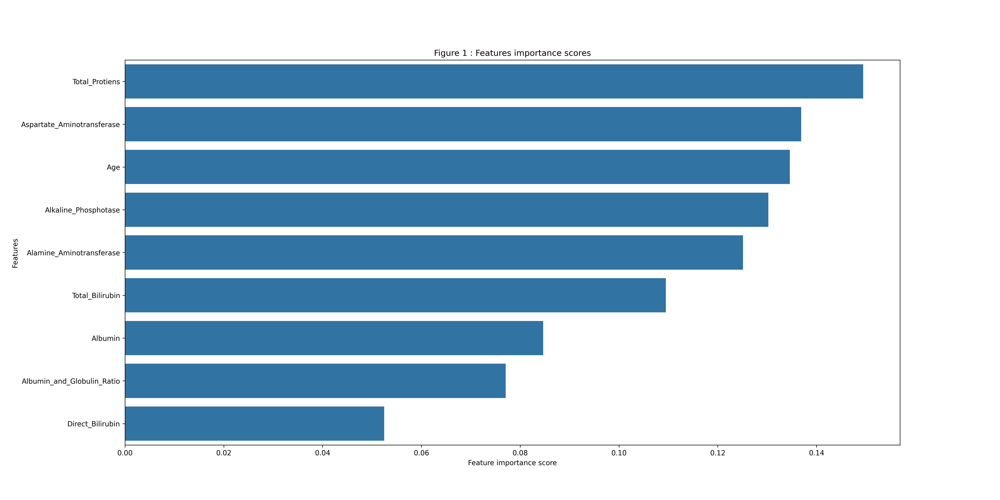
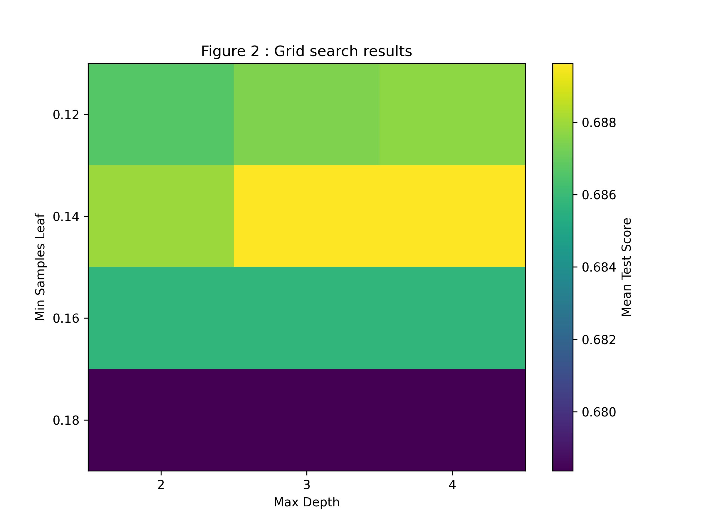
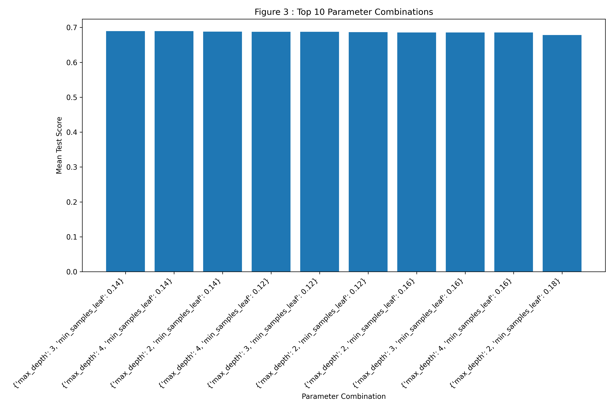

🇫🇷 Visualisations du projet
Cette page regroupe les graphiques générés pour l’analyse du jeu de données Liver.
🇬🇧 Project Visualisations
Liver dataset analysis.

Figure 1 - Features importance scores

Figure 2 - Grid Search results

Figure 3 - Top 10 parameter combinations